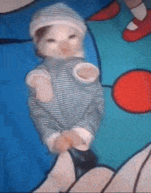

Sobre mí
Estudiante de Ingeniería en Sistemas en la Universidad Vasco de Quiroga (UVAQ) en Morelia, Michoacán. Enfocado en desarrollo backend, arquitectura de datos y optimización de algoritmos. Me interesa construir soluciones desde los fundamentos, entendiendo cómo funcionan las cosas por debajo
Habilidades
- Lenguajes: Java, JavaScript, PHP, Python, Julia, SQL.
- Backend y Bases de Datos: Node.js, MySQL, PostgreSQL, diseño de APIs REST
- HTML5, CSS
- Sistemas y Herramientas: Administración Linux, Git/GitHub, IntelliJ IDE, Visual Studio Code, TablePlus
- Idiomas: Español nativo, Inglés B2
Proyectos


Formación
- Ingeniería en Sistemas — Universidad Vasco de Quiroga (UVAQ) | En curso.
